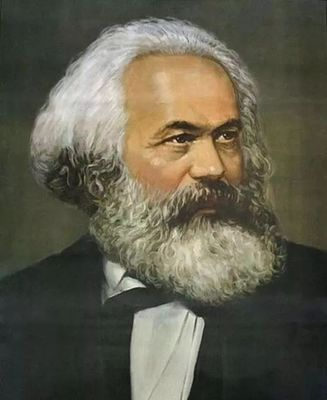

马克思主义基本原理

马克思主义基本原理是马克思主义理论体系的核心内容，它由马克思主义哲学、马克思主义政治经济学和科学社会主义三个部分组成。
一、马克思主义哲学
马克思主义哲学即辩证唯物主义和历史唯物主义，它揭示了自然界、人类社会和人类思维发展的一般规律。
- 辩证唯物论强调世界的物质性和意识的能动性。
- 唯物辩证法包括对立统一规律、质量互变规律、否定之否定规律等，是认识世界和改造世界的根本方法。
- 辩证唯物主义认识论阐述了认识的本质、过程和方法。
- 历史唯物主义揭示了人类社会发展的一般规律，强调社会存在决定社会意识，生产力与生产关系、经济基础与上层建筑的矛盾运动推动社会发展。
二、马克思主义政治经济学
马克思主义政治经济学通过对资本主义生产方式的深入分析，揭示了资本主义的本质及其发展规律。
- 劳动价值论指出价值是由劳动创造的，商品的价值量由社会必要劳动时间决定。
- 剩余价值理论揭示了资本家剥削工人的秘密，即资本家通过无偿占有工人创造的剩余价值来获取利润。
- 资本主义经济危机理论分析了资本主义经济危机的根源和周期性，指出资本主义制度的内在矛盾是经济危机的根本原因。
三、科学社会主义
科学社会主义是关于无产阶级解放斗争的性质、条件和一般目的的学说。
- 无产阶级的历史使命是推翻资本主义制度，建立无产阶级专政，最终实现共产主义。
- 社会主义必然代替资本主义是历史发展的必然趋势，共产主义社会是人类社会发展的最高阶段。
- 无产阶级政党是实现社会主义和共产主义的领导力量，必须坚持以马克思主义为指导，代表最广大人民的根本利益。
马克思主义基本原理是我们认识世界、改造世界的强大思想武器，对于推动人类社会的进步和发展具有重大而深远的意义。